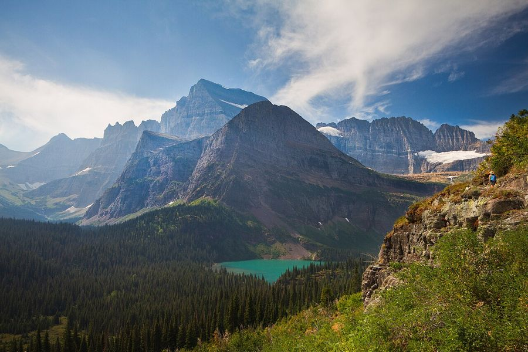
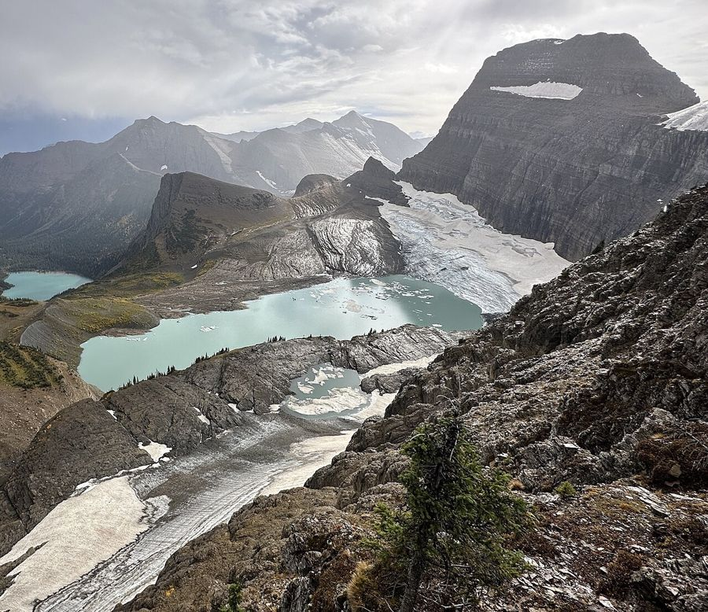

The route starts here. Follow the marked trail toward Grinnell Glacier Overlook.
Photo: Jeff Pang · CC BY 3.0 · Wikimedia Commons

You have reached Grinnell Glacier Overlook. The route profile follows the trail from the named trailhead to this endpoint.
Photo: Alexander Bock · CC BY-SA 4.0 · Wikimedia Commons